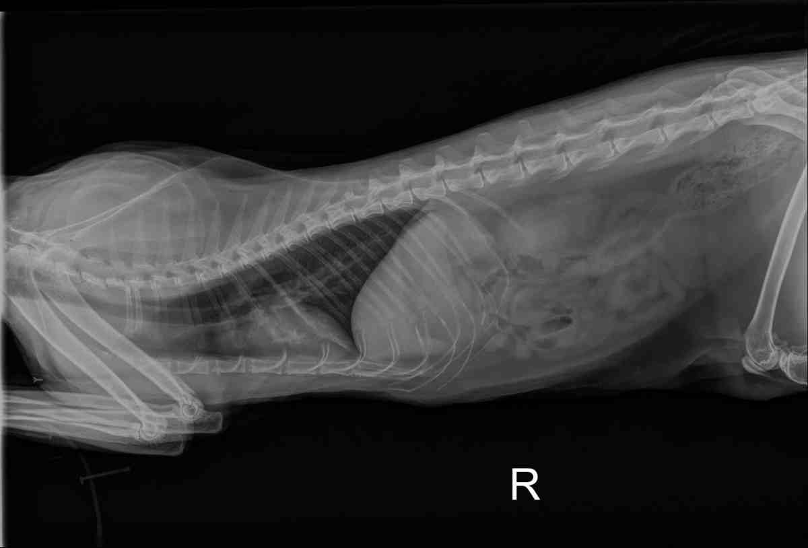
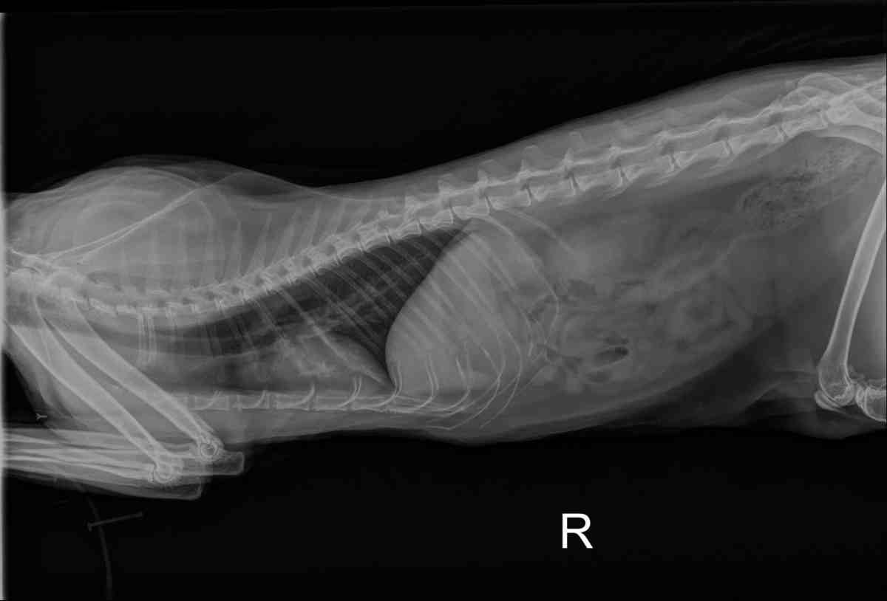

En Equilibrio Animal, contamos con equipos de análisis de laboratorio e imagenología de tecnología de punta, proporcionando equipos ultramodernos para la temprana detección de posibles trastornos patológicos o clínicos.
 

Contando con resonancias magnéticas, rayos X, pruebas de laboratorio, tomografía, optometría, entre otros.